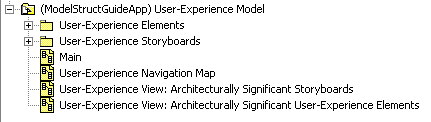
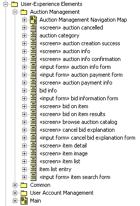
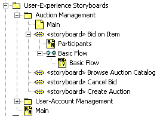
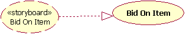
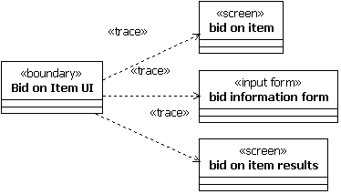
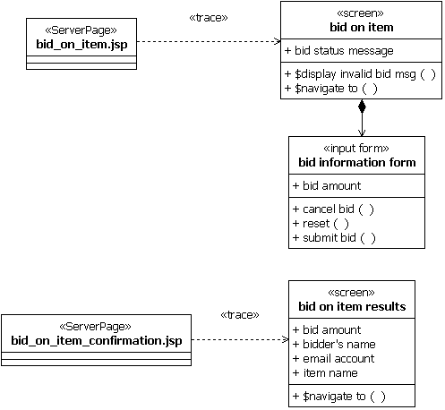

| Рекомендация: User-Experience Model |
 |
|
| Связанные элементы |
|---|
IntroductionThe User-Experience Model is a UML model of the user-interface, including UML representations of the user-interface elements (Work Product: User-Experience Elements), the Storyboards (User-Experience Storyboards) and the Navigation Map (User-Experience Model Navigation Map). These guidelines will describe modeling conventions and recommendations for representing the User-Experience Model and it's constituent artifacts. Guidelines for modeling traceability between the User-Experience Model and other system models is also described. Characteristics of a Good User-Experience ModelA good User-Experience Model has the following characteristics:
For specific characteristics, see Checklist: User-Experience Model. User-Experience Model StructureNote: The model structure described here is just a recommendation and could be replaced by any number of equally valid structures. The recommended structure for the "User-Experience Model" is shown in Figure 1.
 The "User-Experience Elements" package contains the User-Experience Elements (screens, input forms, etc.). The "User-Experience Storyboards" package contains the User-Experience Storyboards. The User-Experience Model Navigation Map for an application may be represented by a single class diagram (see the "User-Experience Navigation Map" diagram in Figure 1), or in a set of diagrams (see the "Auction Management Navigation Map" diagram in the "Auction Management" package in Figure 2 as an example of a User-Experience Navigation Map per User-Experience Element package). For more information on the User-Experience Navigation Map, see Guideline: User-Experience Navigation Map. The User-Experience View of the software architecture is represented using a set of diagrams, each of which includes "User-Experience View:" in its name (see the "User-Experience View: Architecturally Significant Storyboards" diagram and the "Architecturally Significant User-Experience Elements" diagram in Figure 1). For more information on the User-Experience View, see the "User-Experience View" section of Guideline: Software Architecture Document. The "User-Experience Elements" package may be further partitioned into packages that group sets of User-Experience Elements. This is shown in Figure 2, where the additional "Auction Management", "Common", and "User Account Management" packages have been defined.
 For more information on User-Experience Elements, see Guideline: User-Experience Element. The "User-Experience Storyboards" package contains the User-Experience Storyboards. The "User-Experience Storyboards" package may be further partitioned into packages that group sets of User-Experience Storyboards. This is shown in Figure 3, where the additional "Auction Management" and "User Account Management" packages have been defined.Each Storyboard realizes a Use Case, has the same name as that Use Case, and should have the structure shown in Figure 3.

The "Participants" diagram shows the User-Experience Elements that participate in the User-Experience Storyboard (that
is, those elements whose instances appear on the interaction diagrams) and the navigation relationships that support
the flows described by the interaction diagrams. The "Basic Flow" diagram is an example of an interaction diagram that
describes the flow between the participating User-Experience Elements during the execution of the associated Use Case.
There should be an interaction diagram for each flow of events in the Use Case. For more information on User-Experience
Storyboards, see Guideline: User-Experience Storyboard. User-Experience ElementsFor User-Experience Element guidelines, see Guideline: User-Experience Element. User-Experience Navigation MapFor User-Experience Navigation Map guidelines, see Guideline: User-Experience Navigation Map. User-Experience StoryboardsFor User-Experience Storyboard guidelines, see Guideline: User-Experience Storyboard. Traceability Between the User-Experience Model and Other System ModelsNote: The User-Experience Model is not "dependent on" (or aware of) any system model, except the Use-Case Model. Thus any consistency and/or traceability between the User-Experience Model and any other model, must be maintained in the other model. Specifically, traceability between the User-Experience Model and the Analysis and Design Models is maintained in the Analysis and Design Models, not in the User-Experience Model. Between the User-Experience Model and the Use-Case ModelFor every Use Case that interacts directly with a user, there will be a User-Experience Storyboard that realizes the Use Case. If explicit traceability is desired from the storyboard to its associated Use Case, a realization relationship can be drawn from the User-Experience Storyboard to the Use Case as shown in the following diagram. However, in most cases, using the same name for both the Use Case and the User-Experience Storyboard is probably enough.  Between the User-Experience Model and the Analysis ModelEvery boundary Analysis Class in the Analysis Model should be traceable to at least one User-Experience Element. If desired, traceability can be explicitly modeled between the boundary Analysis Classes and the User-Experience Elements using a UML dependency relationship with a "trace" stereotype that is drawn from the boundary class to the User-Experience Element. An example of such traceability is shown below.  However, in many cases, such traceability does not have to be explicitly modeled, but can be derived based on the relationships between the User-Experience Storyboards and the Use-Case Realizations. For example, there is one User-Experience Storyboard and one Use-Case Realization for each Use Case. For a Use Case that has a user interface, there is at least one boundary Analysis Class representing the user interface in the Use-Case Realization. These boundary Analysis Class(es) map to the User-Experience Elements participating in the associated User-Experience Storyboard. Between the User-Experience Model and the Design ModelEvery User-Experience Element in the User-Experience Model should be traceable to at least one Design Class in the Design Model. If desired, traceability can be explicitly modeled between the Design Classes and the User-Experience Elements using a UML dependency relationship with a "trace" stereotype that is drawn from the Design Class to the User-Experience Element. An example of such traceability is shown below.
 Note: The input form does not need to be explicitly associated with a Design Class because input forms are always contained within screens. Thus, input forms are associated to whatever Design Classes their "parent" screens are associated to. |
© Copyright IBM Corp. 1987, 2006. Все права защищены.. |